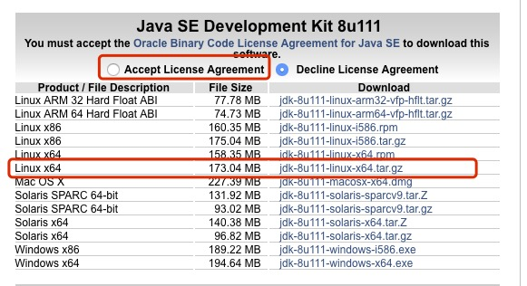
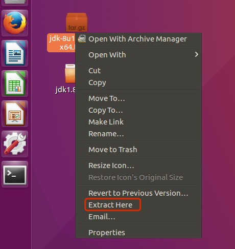
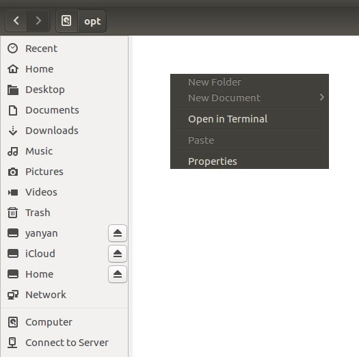
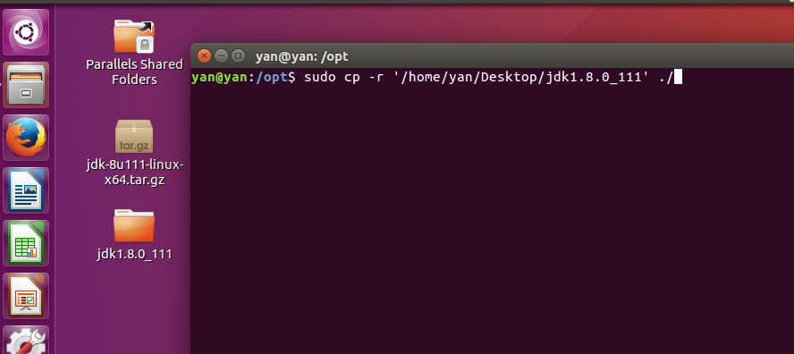
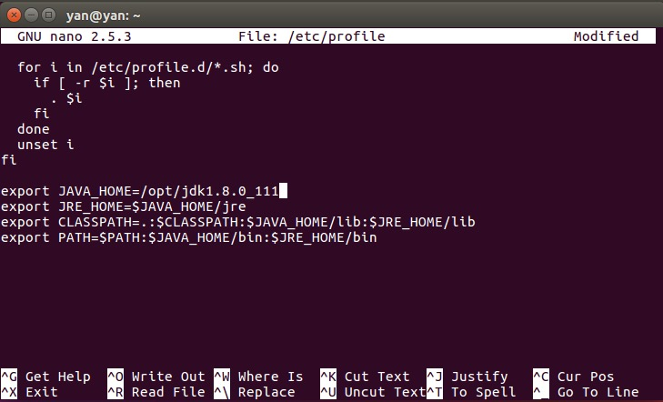
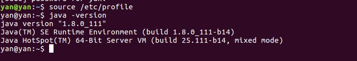

Ubuntu
1.官网下载JDK
地址：http://www.oracle.com/technetwork/java/javase/downloads/jdk8-downloads-2133151.html

这里我下载的是jdk8，注意勾选上Accept License Agreement。
2.解压缩

3.拷贝JDK
把文件拷贝到~/opt文件夹下。
先进去这个路径中，右键点击Open in Terminal。

将解压缩后的jdk拷贝到~/opt路径下
sudo cp -r '/home/yan/Desktop/jdk1.8.0_111' ./

4.配置环境变量
键入命令：
sudo nano /etc/profile
在最后一行添加以下内容：
export JAVA_HOME=/opt/jdk1.8.0_111
export JRE_HOME=$JAVA_HOME/jre
export CLASSPATH=.:$CLASSPATH:$JAVA_HOME/lib:$JRE_HOME/lib
export PATH=$PATH:$JAVA_HOME/bin:$JRE_HOME/bin

ctrl+x退出编辑，输入y确认保存，再回车。
重新执行配置文件，键入命令：
source /etc/profile
最后，验证jdk是否已安装成功，键入以下命令：
java -version
